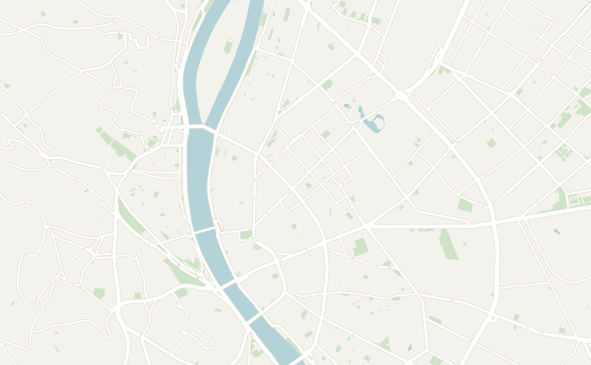
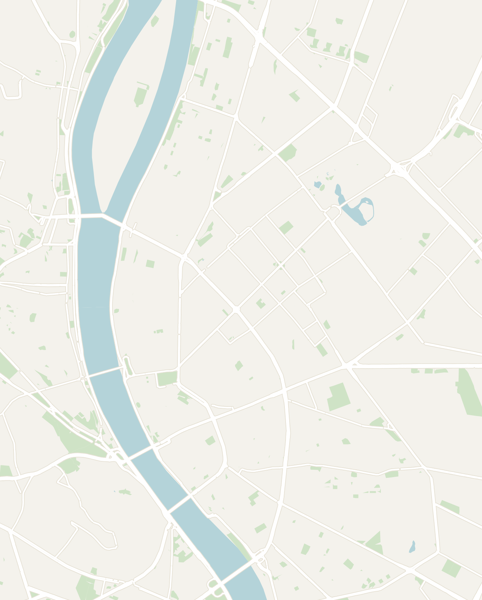

General
Hungary sits in the heart of Central Europe and for most travelers the country is really about one city: Budapest. Split by the Danube river, Budapest is actually the combination of two cities: the hilly, historic Buda and flat, urban Pest. The city is a grand, slightly faded imperial capital of the Austro-Hungarian empire, known for its thermal baths, ruin bars, and some of the best river views in Europe.
Budapest is easy to reach and easy to combine with Vienna or the rest of Central Europe. Most people spend their time in the city, but the lakes and small towns beyond it are worth adding on if you have extra time.
- Getting around — Budapest's airport (BUD) connects to most of Europe. The city has an excellent metro, tram and bus network, and the center is compact enough to walk much of it. Trains link Budapest to Vienna, Bratislava and beyond in a few hours
- Money — Hungary is in the EU but not the Eurozone, so it uses the Hungarian Forint (HUF). It's noticeably cheaper than Western Europe. Cards are widely accepted, but keep some cash for markets and ruin bars
- Food — very hearty and they love their paprika: Goulash (Hungarian stew served with tiny dumplings), Chicken Paprikás, Lángos (huge piece of fried dough topped with sour cream and cheese) and Halászlé (Fisherman's Stew). Save room for strudel and visit the historic coffee houses
- Language — Hungarian (Magyar) is unlike any of its neighbors' languages and famously complex. You'll have no problem getting around with English especially in Budapest and tourist areas
- Safety — Budapest felt very safe day and night; just watch for the usual tourist-area pickpocketing and overpriced taxis
- How long to stay — 4 to 5 days are enough for Budapest with time to slow down. Add more time if you want to explore beyond and visit Lake Balaton or the Danube Bend
Budapest
3–4 days recommendedBudapest is two former cities facing each other across the Danube River: hilly, historic Buda on the west bank and flat, grand Pest on the east. The city is built for wandering, with imperial architecture, thermal baths, and a nightlife scene centered on its famous ruin bars. Budapest is large, but the sites are very walkable. I would spend 3–4 days there and pick a neighborhood to focus on each day.
- Buda — most of the highlights are all centered around Castle Hill and easily visited together
- Buda Castle — a palace complex on the hill (despite the name). It's less impressive inside than from across the river. The views over the city and Parliament are the main draw, and the whole castle district is worth an hour of wandering
- Fisherman's Bastion — a neo-Romanesque terrace with 8 towers overlooking the river, with a café embedded in one tower. The views of Parliament and the river are great from here
- Matthias Church — right next to Fisherman's Bastion, strikingly decorated both inside and out. The patterned colored-tile roof is its signature
- Danube River Cruise — take a 1.5-hour evening cruise and catch the sunset from the river. It passes all the major monuments including Parliament. Many tours include unlimited Prosecco (and they keep it flowing). It was probably my favorite activity in Budapest and a very good value at only ~17 Euros. I took "Elegant Cruise" with Duna Cruises. Book it online here
- Citadella — a 19th century Habsburg fortress on top of Gellért Hill with the best panoramic views in Budapest. The 14-meter Liberty Statue at the entrance is one of Budapest's most recognizable landmarks. Reopened in April 2026 after years of renovation with a new immersive history museum inside
- Széchenyi Chain Bridge — the most beautiful bridge in Budapest, connecting Buda and Pest across the Danube
- Pest
- Hungarian Parliament — across the Danube in Pest, one of the most intricate and impressive buildings that I've seen. Take a guided tour inside; the night view from across the river is spectacular
- Liberty Square — nearby Parliament, you'll find Liberty Square where there is the Citizens' Holocaust Memorial and statues of Ronald Reagan and George H.W. Bush. They are celebrated in Hungary for bringing down the Iron Curtain (a quirky, disorienting sight for me as an American)
- Széchenyi Thermal Baths — Budapest is known to have some of the most beautiful thermal baths in all of Europe. Located in the city park, the Széchenyi Thermal Baths is perhaps the largest and most grand. Spend a day relaxing here and explore the different pools (two hot, one cooler)
- Saturday Spa Party ("Sparty") — an outdoor thermal bath party on Saturday evenings with DJs, fire performers and dancers, across the three pools. It came recommended to us as one of the best parties in Europe. However, I personally had a very negative experience with inappropriate behavior toward the women we were with. That said, if you're still interested buy tickets in advance as it typically sells out
- House of Terror — a museum in the former headquarters of the Nazi Arrow Cross and later the ÁVO (Hungarian secret police). The audio guide is excellent, covering the Fascist occupation and then the Communist terror in vivid detail. One of the most powerful museums in Budapest
- Central Market Hall — right at the end of the Liberty Bridge, visit a 3-story market with fresh produce, meat, spices, and souvenir stalls. A good place to explore and try some fresh foods
- Jewish Quarter (District VII) — wander the old Jewish quarter in Budapest and learn about the impact of WWII on the city. It has been revived and is now home to many of the ruin bars
- Carl Lutz Rakpart — the riverfront promenade on the Pest side
- Café Kör — my favorite restaurant in Budapest serving traditional Hungarian cuisine. Order the Chicken Paprikás with bread dumplings here. It was the best dish I had in Budapest: a creamy paprika chicken sauce with bread dumplings that soak it all up
- Horgásztanya Vendéglő — a traditional Hungarian restaurant that I went to multiple times. Make sure to try their stews, either the Hungarian national dish Goulash (a thick paprika-and-beef soup) or the restaurant's signature dish Halászlé (Fisherman's Stew)
- Nor/ma Scandinavian Bakery — located near the Central Market. I had a delicious strawberry cheese strudel and coffee here
- Szimpla Kert — the original Budapest ruin bar located in the Jewish Quarter. Budapest is famous for its ruin bars, which are old, abandoned buildings that have been converted into lively bars. Ruin bars are now the heart of nightlife in the city and an essential Budapest experience. Szimpla Kert is two stories and has many rooms, each with a different theme and music
- Instant-Fogas — the largest ruins bar in Budapest with 7 clubs all embedded in one building. It is a fun night making your way through them all
- Mazel Tov — a wine bar with vines and fairy lights overhead in the Jewish Quarter. Beautiful and a great spot for a date night
- Monastery Boutique Hotel — a fancy, boutique hotel set in a former monastery, centrally located in Pest and within walking distance of the main sights


Double-tap to open in Google Maps
Other Places to Consider
Almost everyone sticks to Budapest, but if you have extra days, Hungary has plenty more worth adding on:
- Lake Balaton — Central Europe's largest lake and Hungary's summer beach destination, a couple of hours southwest of Budapest
- Szentendre — a small riverside art town on the Danube Bend, an easy day trip from Budapest
- Eger — a historic town known for its castle, baroque streets and the "Bull's Blood" red wine
- Danube Bend — a scenic curve of the river north of Budapest, with hilltop castles at Visegrád and Hungary's largest basilica at Esztergom
- Pécs — a warm southern city with early Christian tombs, Ottoman-era architecture and a lively university city